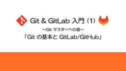
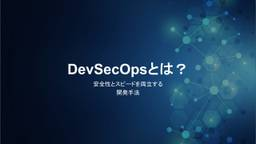
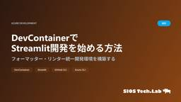
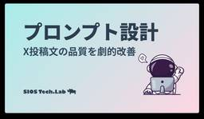

SIOS Tech. Lab
https://tech-lab.sios.jp
サイオステクノロジーのエンジニアが クラウド、OSS、認証に関する様々な情報を提供します。
フィード
Claude Codeが作成する~/.claudeディレクトリの詳細解析 1
1
SIOS Tech. Lab
PS SLの佐々木です。 今回はClaude Codeを使っていてToDoリストがどのように管理されているのかやタスク完遂まで具体的にどのような作業が行われているのかを知りたく~/.claudeディレクトリを観察してみま ...Claude Codeが作成する~/.claudeディレクトリの詳細解析 first appeared on SIOS Tech. Lab.
1日前

Git & GitLab 入門 (1) ～Git マスターへの道～「Git の基本と GitLab/GitHub」
SIOS Tech. Lab
はじめに ソフトウェア開発の現場では、複数人での協業やコードの履歴管理が欠かせません。 そうした中で「バージョン管理システム」は、いまや開発の基盤ともいえる存在です。その中でも特に広く使われているのが「Git」と「Git ...Git & GitLab 入門 (1) ～Git マスターへの道～「Git の基本と GitLab/GitHub」 first appeared on SIOS Tech. Lab.
1日前

DevSecOpsとは？安全性とスピードを両立する開発手法
SIOS Tech. Lab
はじめに 近年、ソフトウェア開発の現場ではDevSecOpsというアプローチの重要性が高まっています。 DevOpsによってソフトウェア開発の効率化を実現することは浸透してきていますが、同時にサイバー攻撃も高度化・巧妙化 ...DevSecOpsとは？安全性とスピードを両立する開発手法 first appeared on SIOS Tech. Lab.
1日前
Claude×技術ブログで執筆環境が激変！次世代AI協働ワークフロー解説
SIOS Tech. Lab
挨拶 ども！7月の追い込みが激しくて、いろんなものに追い回されている龍ちゃんです。まぁすべてを引き受けたのは自分なので自己責任ですが、調子に乗っていたなと反省しています。とはいえ、割と順調に片付いているので、余裕が出てき ...Claude×技術ブログで執筆環境が激変！次世代AI協働ワークフロー解説 first appeared on SIOS Tech. Lab.
3日前

DevContainerでStreamlit開発を始める方法：Docker＋VSCode 2
SIOS Tech. Lab
挨拶 ども！最近はAI関連からInfrastructure as Code（IaC）などにも入門して幅広いブログを執筆している龍ちゃんです。最近はブログ執筆にAIを導入して、執筆スピードと質が上がっているような気がして楽 ...DevContainerでStreamlit開発を始める方法：Docker＋VSCode first appeared on SIOS Tech. Lab.
5日前

【2025年版】Claudeプロンプト設計術｜X投稿文の品質を劇的改善
SIOS Tech. Lab
はじめに ども！最近はAIを使った自動化に注目している龍ちゃんです。実は最近、SIOSテックラボのX担当者もやっているんですが、投稿頻度によっては半分ぐらい自分のブログ宣伝をしているので、ほぼ私物になっています。 今回は ...【2025年版】Claudeプロンプト設計術｜X投稿文の品質を劇的改善 first appeared on SIOS Tech. Lab.
6日前

PyJWTを用いたアクセストークンの検証をやってみた
SIOS Tech. Lab
こんにちは織田です 今回はRAG-STDの開発中にPyJWTを用いてトークン検証を実施しましたので、そこで得た知見についてまとめようと思います。 JWTおよびPyJWTとは？ JWT (JSON Web Token) と ...PyJWTを用いたアクセストークンの検証をやってみた first appeared on SIOS Tech. Lab.
8日前
マルチステージビルドでPythonアプリケーションを軽量化
SIOS Tech. Lab
PSSLの佐々木です。 今回は、Dockerのマルチステージビルドを使ってPythonアプリケーションのサイズを削減する方法を解説します。 JavaやGoのようなコンパイル言語であればビルド時と実行が明確に分かれており、 ...マルチステージビルドでPythonアプリケーションを軽量化 first appeared on SIOS Tech. Lab.
10日前
[Azure][Bicep]Azure Container Apps と Jobs の特徴とBicepによる構築
SIOS Tech. Lab
概要 こんにちは、サイオステクノロジーの安藤 浩です。 Bicep で Azure Container Apps と Jobs を構築したので、使い分けと実際のBicep でのパラメータとインフラを構築する方法を説明しま ...[Azure][Bicep]Azure Container Apps と Jobs の特徴とBicepによる構築 first appeared on SIOS Tech. Lab.
10日前
Dockerイメージの選び方ガイド
SIOS Tech. Lab
PSSLの佐々木です。 Dockerを使っていると、同じアプリケーションでも様々なイメージタグが用意されています。node:18、node:18-slim、node:18-alpineなど、どれを選べばいいのか迷ってしま ...Dockerイメージの選び方ガイド first appeared on SIOS Tech. Lab.
10日前